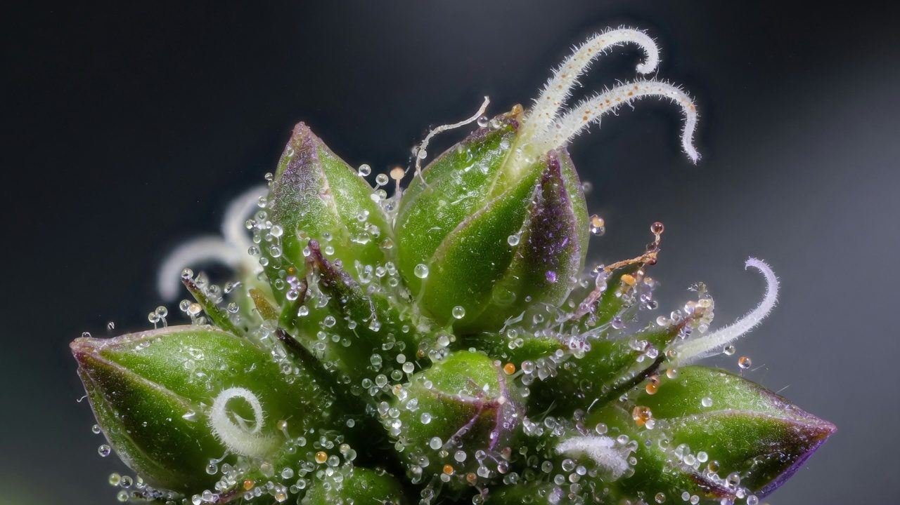
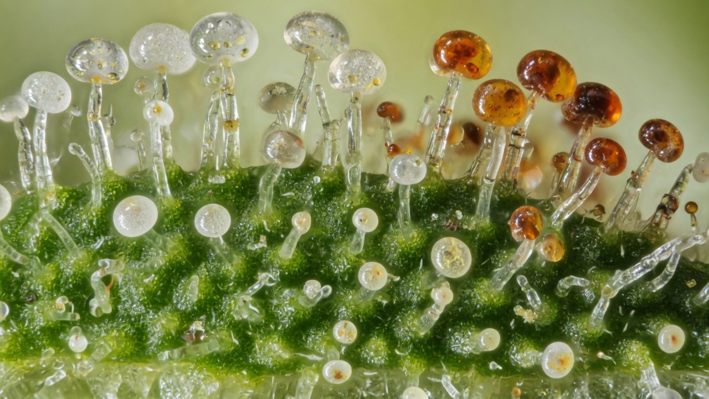
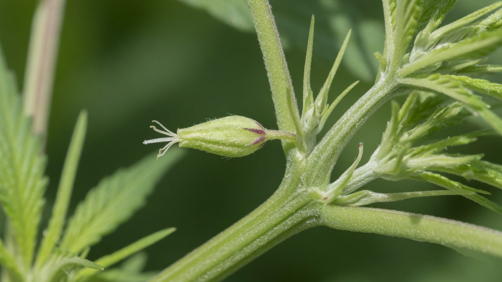
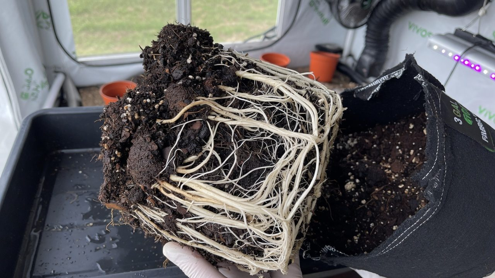

Cannabis plant biology and the life cycle
What kind of plant cannabis actually is, every part of it named, and the machinery underneath: the life cycle stage by stage, how the night triggers flowering, sex and hermaphroditism, photosynthesis, roots and hormones. The biology every other paper on this site leans on.
What this is and how to use it
Every other paper on this site quietly assumes you know what a node is, why the dark period is sacred, and what a trichome actually does. This is the paper that teaches it. It is the reference chapter: the plant itself, part by part and stage by stage, with the mechanisms underneath explained in plain language.
You do not need any biology background. Every term is defined the first time it appears, and the whole vocabulary is collected in a quick-reference table at the end. Read it once end to end before your first grow, then come back whenever a word or a mechanism trips you in another paper.
Where a topic has its own dedicated paper, this chapter gives you the biology and hands over: seeds and germination for popping seeds, the flower cycle week by week for running bloom, lighting fundamentals for the hardware side of light, and defoliation and training for shaping the plant. Here we cover the why that sits under all of them.
Anyone starting out, and anyone mid-grow who keeps meeting words like bract, internode, phytochrome or sink and wants them nailed down once, properly, with sources.
Accuracy, self-review, and grain-of-salt notes
We've gone to great lengths to keep these guides honest. One of the main ways we do that is self-review: we actively look for claims that are subjective, only lightly backed by literature, or based on grower practice rather than a controlled study — and we call those out instead of dressing them up as settled science.
Often there simply is no paper for the decision you're making. In those cases we're drawing on what other growers report and what has worked in our own rooms. That can still be useful — but it is not a lab proof. Do what works for your plants, your room, and your meters. If a table disagrees with your crop, believe the crop and log the difference.
- Core definitions and measurement units used in the paper
- Safety-critical limits where occupational or standards sources are cited
- Numeric stage targets (light, climate, feed) as starting bands, not laws
- SOPs that work in many rooms but need your genetics and meters
- Any single-number 'guaranteed' yield or potency claim without a multi-site trial
- Controller setpoints copied from another facility without re-calibration
See something glaringly wrong? Tell us and we'll fix it. Please open a GitHub issue with the paper name and what looks off (include a source if you have one): Report an accuracy issue. Local law, labels, and licences always override any recipe here. Inline notes labelled grain of salt flag the highest-risk over-trust points in the text.
What kind of plant cannabis is
Cannabis sativa L. is an annual, normally dioecious, wind-pollinated flowering herb in the family Cannabaceae, the same small family as hops. It completes its whole life in one season, keeps male and female flowers on separate plants, and mails its pollen on the wind.[1][2]
Each of those dry facts is a grow-room rule wearing a lab coat:
- Annual means no second chances inside a season. The plant runs its program once. Indoors you replay the seasons with a light timer, which is why the schedule matters so much.
- Dioecious means roughly half of regular seeds become males you must find and remove. Unpollinated females (sinsemilla) put their energy into resin instead of seed.
- Wind-pollinated means pollen is airborne, abundant and mobile. One shedding male, or one stressed female throwing anthers, can seed an entire room, and pollen rides clothing and airflow between rooms.
- Short-day means an unbroken dark period is the flowering switch. Light discipline is the trigger mechanism itself.
Annual, dioecious, wind-pollinated, night-triggered. Nearly every hard rule in cultivation (cull males early, seal the dark period, plan the whole cycle before you start) is one of these four facts asserting itself.
Sativa, indica, ruderalis: the honest version
The folk story says there are two (or three) kinds of cannabis: tall, airy, energising sativas; short, dense, sedating indicas; and a tiny weedy ruderalis that flowers on its own. It is a useful shorthand for growth habit. As biology, and especially as a predictor of effect, it does not hold up.
Botanically, most taxonomists treat cannabis as a single, extraordinarily variable species, Cannabis sativa L., pulled in different directions by thousands of years of human selection for fibre, seed and resin. The hemp-versus-drug split is a THC threshold written into law, not a clean biological boundary.[1]
It gets worse for the street labels: in the formal taxonomy, virtually all drug cannabis, everything sold as sativa and everything sold as indica, sits inside the same subspecies (C. sativa subsp. indica). The street terms map loosely onto narrow-leaflet versus broad-leaflet drug lineages, and 'ruderalis' is a debated name for feral, short-season northern populations rather than a settled species.[2]
Genomics settled the practical question. A 2021 study genotyped over 100 commercial samples at roughly 100,000 genetic markers: samples labelled sativa and indica were genetically indistinguishable at the whole-genome level. The labels tracked only a handful of aroma terpenes, controlled by variation in terpene synthase genes, in other words, the label weakly predicts smell, not ancestry and not pharmacology.[3]
| Folk claim | Verdict | What the evidence says |
|---|---|---|
| Sativa = energising, indica = sedating | Weak | Labels are genetically indistinct; effects come from cannabinoid dose, terpene mix, the person and the setting[3] |
| Leaf shape predicts the high | No | Leaflet width tracks lineage and climate history, not pharmacology[2] |
| Indica and sativa are separate species | Contested, mostly no | Mainstream treatment: one variable species with subspecies; centuries of crossing have blended the pools anyway[1] |
| Ruderalis is the autoflower parent | Broadly yes | Feral short-season populations are day-neutral; breeders introgressed that trait into modern autoflowers[11] |
| The strain name tells you what you are getting | Unreliable | Names are unregulated; the same name can differ genetically between suppliers. Trust COAs and your own logs[3] |
Buy and breed on chemotype (COA numbers), documented cultivar behaviour (stretch, finish time, mould tolerance) and your own grow logs. 'Sativa' and 'indica' still earn their keep as rough descriptions of plant shape, nothing more.
A tour of the plant, top to bottom
Strip away the mystique and a cannabis plant is a repeating unit stacked on itself: a stem segment, a node carrying leaves, and a dormant growing tip tucked into each leaf angle. Learn that unit and you can read any plant in any room.
The meristems are the plant's growth budget. The apical meristem normally dominates, and the axillary buds wait. Every training technique, topping, low-stress training, the trellis work in the defoliation and training paper, is just a way of reassigning that budget to the meristems you want (the hormone mechanics are in section 14).
Leaves keep score of maturity. Seedling leaves start with a single leaflet, then three, then five, up to seven or more per fan leaf as the plant hits its stride.[4] Leaf arrangement is another tell: young plants place leaves in opposite pairs, and as the plant approaches flowering it shifts to alternate (staggered) placement, a visible sign the shoot has switched programs.[5]
The stem is the plumbing between the two halves of the plant: xylem hauls water and minerals up from the roots (driven by transpiration from the leaves), and phloem moves sugar from the leaves to wherever it is being spent. Keep that two-pipe picture. It is the whole basis of the photosynthesis and source-sink story in section 12.
A seed-grown plant builds a taproot with laterals branching off it. A rooted cutting never gets one. It grows a fibrous ball of adventitious roots from the cut stem instead (see the cloning paper). Both work; clones are simply shallower and quicker to dry out at the base.

Inside the flower: bract, calyx, pistil, stigma
An individual female cannabis flower is tiny and easy to misread: one small ovary wrapped in a resin-coated leaf-like pod, with two white hairs reaching out of the top. What growers call a bud is hundreds of these units packed along a stem axis with small sugar leaves between them.[5]
The stigma story explains sinsemilla. If pollen lands, the ovary swells into a seed and the plant redirects energy from resin and flower-building into seed-filling. Keep every male and every anther out of the room and the females sit unpollinated, stacking bracts and resin instead, seedless flower, sinsemilla, which is the entire commercial product.
Male flowers are a different design for a different job: five small tepals and five hanging stamens that shake pollen into the airflow, clustered in loose panicles with almost none of the trichome coverage females carry. They open, shed for days, and die, evolutionarily they only exist to fill the air with pollen.[1]
A single flowering male sheds millions of airborne grains, and HVAC will deliver them for you. Unless you are deliberately breeding, males get identified early (section 10) and removed before any flower opens.

Trichomes: where the value is made
Everything the market pays for (THC, CBD, the aroma terpenes) is manufactured and stored in glandular trichomes: microscopic mushroom-shaped glands on the flower surface. The cannabinoids are not 'in the bud' in some general sense; they sit in a resin reservoir inside each gland head, between the secretory cells and their waxy cap.[6]
The types are connected, not separate castes: as flowers mature, sessile-like glands convert into capitate-stalked ones. The head is raised on a new stalk and the secretory disc gains cells (eight in sessile heads, 12-16 in stalked). Gland output shifts with maturity too, which is part of why harvest timing changes the character of the product, not just its strength.[6]
Two practical consequences. First, gland heads change colour with age, clear, then milky, then amber. Which is the harvest-timing signal covered properly in the flower cycle paper. Second, the heads sit on breakable stalks: every rough handle, tumble or warm touch after harvest knocks resin off the flower, which is why drying, trimming and hash work (see hash and rosin) are all built around being cold and gentle.
A NZ$15 jeweller's loupe (60x) turns trichomes from folklore into data: type, density, colour, damage. It is the single cheapest instrument in cultivation.
The life cycle, stage by stage
Cannabis is monocarpic: it flowers once, with everything it has, and then dies. Harvest is you interrupting its senescence at the profitable moment. The stages below are one continuous program; each hands the next its starting conditions.[4]
- 1Germination (roughly 3-7 days)The seed takes up water, metabolism switches on, and the radicle, the embryonic root, breaks out first and steers down with gravity. Everything runs on stored seed reserves. Detail and technique in the seeds and germination paper.
- 2Seedling (weeks 1-3)The two round cotyledons (seed leaves) open and the first true, serrated leaves appear, single leaflets at first, then three, then five. Under the surface the priority is root establishment; above it the plant is fragile to overwatering and damping-off.[4]
- 3Vegetative (from ~week 3, as long as you choose)Pure infrastructure: nodes, leaf area and root mass compound while long days hold flowering off. The plant also matures internally. A young plant is not yet competent to flower, which is why cuttings and seedlings need a few weeks before the light flip does anything clean.[4]
- 4Pre-flower / transition (1-2 weeks)With age, small solitary flowers appear at nodes, even under long days, announcing sex and flowering readiness. The short-night flip then converts the shoot tips from making leaves to making the packed flower clusters, and the plant stretches hard while it re-tools.[5]
- 5Flowering (7-10 weeks for most cultivars)Stretch, bud set, bulking, ripening. Buds become the highest-priority sink for sugar (section 12), stigmas and trichomes mark the clock, and the week-by-week detail lives in the flower cycle paper.
- 6Senescence (the last stretch)The wind-down is programmed, not pathological: nitrogen is remobilised out of the fan leaves into the flowers, so lower leaves yellow and drop; resin matures; a pollinated plant races to finish seed and shuts down faster. Then the annual dies, or you harvest.
Autoflowering cultivars compress this map and ignore the light schedule entirely. They get their own section (09) because the difference is genetic, not managerial.
Photoperiodism: the plant counts the night
How does a plant with no eyes measure the seasons? With a light-switchable pigment called phytochrome. It exists in two interconvertible forms: Pr (inactive) flips to Pfr (active) the instant red light (~660 nm) hits it, and Pfr flips back under far-red light (~730 nm), or slowly, over hours, in darkness. Daylight is rich in red, so all day Pfr stays high: a chemical flag reading 'the lights are on'.[7]
The slow dark decay is the timer. A short-day plant like cannabis is really a long-night plant: it commits to flowering when the unbroken dark period exceeds its critical length, night after night. The classic proof is night interruption, break a long night in the middle with even a brief period of light and the plant behaves as if the night were short, staying vegetative. That is precisely why growers keep flowering rooms light-tight and, in reverse, why a mother room can hold plants in veg by never letting a long night happen.[7]
Controlled work shows how sharp the response is: cannabis plantlets grown in vitro flowered under a 12 h photoperiod but stayed vegetative when the light period was extended, small changes in night length flip the decision cleanly.[8] And 12/12 is a safe default rather than a biological law: a trial across ten indoor cultivars found most flowered fine under a 13 h day, and several yielded more thanks to the extra daily light, a cultivar-by-cultivar experiment worth running once a line is stable, never an assumption.[9]
Two subtleties worth owning. First, the full mechanism is more than the toggle: phytochrome feeds a circadian clock, which gates production of a mobile flowering signal (florigen, the FT protein) in the leaves that travels to the shoot tips. Which is why the whole plant flowers together.[7] Second, light beyond the visible red edge still counts: high-intensity near-infrared (~850 nm) delayed cannabis flowering by 12 days in testing, because phytochrome absorption does not stop dead at 700 nm. At the low intensities of a typical security-camera illuminator a few metres from the canopy the effect is negligible. But do not park IR floodlights over flowering plants.[10]
Walk the flowering room during lights-off after 10 minutes of letting your eyes adapt. Tape over equipment LEDs, seal door frames, check pinholes in ducting. Repeated light leaks delay and degrade flowering and are one of the stress inputs behind hermaphroditism (section 11).[13]
Autoflowers: ruderalis and the broken night-counter
Far northern feral cannabis, the populations often called Cannabis ruderalis, though its rank as a species is contested, faced summers where nights barely happen. Waiting for long nights there means dying unpollinated in the frost, so those populations evolved day-neutrality: flower on age, ignore the photoperiod.[1][2]
Breeders moved that trait into modern drug cultivars, and its genetics are now mapped: autoflowering segregates as a simple recessive trait at a major locus (named Autoflower1), with additional day-neutral and early-flowering loci known, and the candidate genes sit in the plant's clock-and-flowering pathway. The practical consequence of 'recessive' matters: cross an autoflower with a photoperiod plant and the offspring are photoperiod, the trait hides unless both parents carry it.[11]
Running autos is a different management contract. You gain schedule freedom (18-24 h of light daily from seed to harvest, no light-tight paranoia for the trigger) and a short, predictable calendar of roughly 10-12 weeks seed to harvest. You give up control: you cannot hold an auto in veg, cannot keep one as a mother plant, and cannot re-veg your way out of a mistake. The internal clock only runs forward. Stress that costs a photoperiod plant a week costs an auto a chunk of its fixed lifespan.
| Photoperiod cultivar | Autoflower cultivar | |
|---|---|---|
| Flowering trigger | Long unbroken nights (the flip to 12/12) | Internal age clock, flowers regardless of schedule[11] |
| Veg length | Yours to choose, days to years | Fixed by genetics, ~3-4 weeks |
| Mother plants / cloning | Standard practice | Impractical, clones share the donor's age clock |
| Light leaks in flower | Serious risk: delay, reversion, herms | Irrelevant to the trigger (stress still matters) |
| Recovering from stress | Extend veg, re-veg possible | No pause button; damage is permanent |
| Typical calendar | Veg (your call) + 7-10 wk flower | ~10-12 wk total, seed to harvest |

Sex: XX, XY, and reading pre-flowers
Cannabis carries true sex chromosomes, which is rare in plants: females are XX, males are XY, and the male is the heterogametic sex, exactly the human arrangement. The X is the largest chromosome in the set and the Y is larger than any autosome, so sex is decided at fertilisation, not by growing conditions.[12] Regular seed therefore runs close to 50:50, and every regular-seed grow is a sexing exercise: identify the males early, remove them before any flower opens.
The plant declares itself before the flip. With age, small solitary pre-flowers form in the leaf axils of upper nodes (under long days, no trigger required) typically from around week 3-4 of veg.[5] Reading them is a loupe job at first: females show a pointed pod with two white stigmas; males show small round pollen sacs on a short stalk, with no hairs. The stipules, those thin green spikes at every node, fool everyone once; they are on both sexes and mean nothing.
If a plant refuses to declare, patience or a brief 12/12 period will force the issue, or sidestep the whole exercise with feminised seed (next section). For breeding work you keep your males, of course, but in a separate space with its own airflow, because of section 05's warning: pollen is the one contaminant you cannot recall.
Hermaphrodites, stress, and feminised seed
Chromosomes set sex; expression can still bend. A genetically female plant can produce functional male anthers, either mixed male flowers or the infamous 'banana' (an exposed anther pushing out of a female flower). Documented drivers: genetic predisposition in some lines, and stress, light leaks and photoperiod disruption, heat, physical damage, running far past ripeness. Hermaphroditism in commercial rooms produces viable pollen and unwanted seed without a single male present.[13]
There is a genetic sting in the tail: seed sired by a hermaphrodite's pollen on a female carries no Y chromosome, so the offspring are female, feminised by accident. Tested herm-derived seed germinated at 90-95% and produced female progeny, but it is effectively self-pollination: low genetic variation, and it can quietly select for the herm tendency itself. Do not build a seed bank out of stress events.[13]
Commercial feminised seed uses the same loophole deliberately, with chemistry instead of stress. Ethylene, a plant hormone, pushes cannabis toward female expression; block ethylene signalling and a genetic female will push out viable male flowers. The standard tool is STS (silver thiosulfate): repeated foliar sprays on a chosen female induce pollen that carries only X chromosomes, that pollen goes onto another female, and essentially all resulting seed is female. Gibberellin sprays can force maleness too, though less reliably, and sprayed plants are breeding stock, never product.[14]
Treat an exposed anther exactly like a male in the room: isolate or cull the plant, note the cultivar and the stress that preceded it, and check its neighbours daily for a week. Anthers can self-seed the plant that made them and everything downwind.[13]
Photosynthesis for growers: light, CO2 and heat are one system
Photosynthesis in one breath: chloroplasts in the leaves use light energy to split water and bolt CO2 from the air onto sugar molecules. Sugar is the plant's only income, every gram of root, leaf and flower is bought with it. Light drives the reaction, CO2 is the raw material, and temperature sets how fast the enzymatic machinery can run.
Because all three feed one process, they limit each other. Classic gas-exchange work on cannabis leaves found photosynthesis climbing with light intensity up to roughly 1500 µmol/m²/s at around 30 °C, and rising further when CO2 was enriched toward 750 ppm, raise one input and the next one becomes the ceiling.[15] That is the entire logic of CO2 enrichment: high light plus enriched CO2 plus a warmer room move together, or not at all. (Leaf-level numbers from one variety are a shape, not a setpoint, whole canopies, cultivars and VPD shift the curve, which is the territory of the grow room as one system.)
Where the sugar goes is the other half of the story. Mature leaves are sources (net sugar exporters); growing tips, roots and above all flowers are sinks (net importers). The phloem allocates by demand, and demand has a pecking order that changes with life stage: in veg, new leaves and roots win; after the flip, the flowers become the dominant sink and everything else queues behind them.
This model earns its keep daily: it is why healthy fan leaves are kept until late flower (they are the income), why defoliation targets shaded, non-earning leaves rather than the well-lit ones, and why late-cycle leaf yellowing is often remobilisation on schedule rather than a deficiency to chase.

Roots: the half you never see
Half the organism is underground and invisible, and most beginner disasters happen there first. The architecture is simple: from seed, a taproot drives down and lateral roots branch off it; from a cutting, a fibrous ball of adventitious roots forms instead. Either way the absorbing surface is not the thick white cables you see at transplant. It is the fuzz of root hairs just behind the growing tips, fragile, short-lived and constantly rebuilt as the roots explore.
Roots run on oxygen. They photosynthesise nothing and respire constantly, burning sugar sent down from the leaves. And that respiration needs O2 from the air spaces in the substrate. Flood those spaces and trouble starts within hours: water and nutrient uptake fall, the plant wilts while sitting in water, and root tissue starts dying, with opportunist pathogens (pythium and friends) queuing up behind the injury.[16] This is the mechanism behind the classic beginner trap: overwatering and underwatering look identical from above. One is thirst; the other is suffocation.
The fix is structural, not behavioural willpower: substrates are engineered air-water compromises (that is the air-filled porosity story in the substrates paper), and watering is judged by weight or measured dryback rather than the calendar, the operating system of crop steering.
The last few millimetres around each root, the rhizosphere, is its own ecosystem. Roots leak sugars and acids into it, feeding a dense microbial community that cycles nutrients, occupies the real estate pathogens want, and chemically differs from the bulk substrate: pH at the root surface shifts with which nutrients the plant is absorbing, which is one reason measured runoff never quite matches what the roots experience (see pH management).
Pot weight, dryback rate, runoff EC/pH, root colour at transplant (white and branching = good; brown, slimy or smelly = oxygen problem). The roots report daily, through instruments, not eyesight.
Hormones in one table
Five hormone families explain most of what a cannabis plant does, and most of what growers do to it. Every training technique is hormone manipulation performed with scissors and timers; every rooting gel and feminisation spray is the chemical version of the same game.
| Hormone | Made mainly in | What it does | Where growers exploit it |
|---|---|---|---|
| Auxin | Shoot tips (apical meristem) | Enforces apical dominance, the tip suppresses the axillary buds below it; triggers root initiation at high local concentration | Topping removes the auxin source, releasing side shoots into a bushier, multi-cola plant. LST flattens the auxin gradient for the same effect without cutting. Rooting gels are synthetic auxins (IBA/NAA) painted onto cuttings |
| Cytokinin | Root tips | Promotes shoot growth and branching; counterweight to auxin; delays leaf ageing | The auxin:cytokinin balance decides shoots-versus-roots, a big healthy root system literally signals the top to branch. Tissue-culture multiplication runs on added cytokinin (see tissue culture) |
| Gibberellin (GA) | Young leaves, seeds | Drives stem elongation and helps break seed dormancy | The post-flip stretch is GA at work, and part of why crowding and shade (which shift light quality) make plants leggier. GA sprays can force male flowers for breeding, though STS does it better[14] |
| Ethylene | Stressed, wounded and ripening tissue | Gas hormone: senescence, ripening, and a push toward female flower expression | Blocking it with STS masculinises a female, the entire feminised-seed industry (section 11). Its stress role is also why wounding and rough handling echo through the plant[14] |
| ABA (abscisic acid) | Roots and leaves under water stress | The drought manager: closes stomata, slows expansion, enforces seed dormancy | Controlled drybacks lean on ABA signalling, part of the mechanism crop steering uses to push a plant generative. Overdo it and the same hormone stalls growth entirely |
Hormones act by concentration and ratio, varying tissue by tissue. That is why topping releases only the nearest few nodes, why rooting gel goes on the cut and not the leaves, and why one stressor rarely has one tidy effect.
Failure modes: biology biting back
Most cultivation disasters are one of the mechanisms in this paper running exactly as designed, against you. The six below account for a large share of ruined first grows.
Phytochrome resets, the night count restarts: flowering stalls, plants drift back toward veg, and the stress feeds herm risk. Fix: dark-adapt your eyes and walk the room during lights-off; tape LEDs, seal doors.[7]
Heat spikes, light interruptions and damage push genetically female plants to throw anthers, bananas, and self-seed the room. Fix: stable climate, sealed dark period, herm-prone cultivars culled from the lineup.[13]
Flooded substrate = zero root oxygen = uptake stops within hours. It looks like thirst from above, so beginners water again. Fix: judge by pot weight and dryback, never by droop alone.[16]
One open male or one banana, and a wind-pollinated species does the rest through your HVAC: a seeded crop. Fix: sex early at the nodes, cull males before flowers open, quarantine anything breeding-related.[13]
Topping and heavy training in flower spends the plant's budget on recovery while the buds queue for sugar. Fix: shape in veg; from bud set onward the meristems you care about are making flowers, not frames.
Buying 'a relaxing indica' is buying label art: the labels are genetically indistinct and predict aroma at best. Fix: chemotype and COA numbers, cultivar sheets, your own logs.[3]
Quick reference: the whole vocabulary in one table
The working vocabulary of this site, one line each. Bookmark this section, every other paper uses these words without stopping to define them.
| Term | Plain meaning | Why you care |
|---|---|---|
| Annual | Lives one season, flowers once, dies | No mid-season restarts; plan the whole cycle |
| Dioecious | Male and female are separate plants | Regular seed = ~half males to find and cull |
| Chemotype | Classification by measured chemistry (THC:CBD) | Beats sativa/indica labels for predicting the product |
| Node / internode | Stem joint / stem between joints | Node spacing reads stretch; nodes host every branch and bud |
| Apical meristem | The main growing tip | Topping removes it to release side shoots |
| Axillary bud | Dormant backup tip at each node | Raw material of every branch and training plan |
| Fan / sugar leaf | Big solar panels / small in-bud leaves | Fan leaves fund the plant; sugar leaves flag trim work |
| Bract | Resin-dense pod around each ovary ('calyx' in slang) | Highest trichome density on the plant |
| Pistil / stigma | Female organ / its two white hairs | Stigma colour is a rough maturity hint |
| Trichome | Glandular resin factory (bulbous, sessile, stalked) | Where cannabinoids and terpenes are made and stored |
| Photoperiod | Daily light length (the schedule) | The lever that starts and holds flowering |
| Critical night length | Minimum unbroken darkness that triggers flower | Why 12/12 works and why leaks break it |
| Phytochrome (Pr/Pfr) | The red/far-red pigment switch | The sensor behind every photoperiod rule |
| Autoflower | Cultivar that flowers on age, not photoperiod | Different contract: fast, schedule-free, unforgiving |
| Pre-flower | First solitary flower at a node | Sexes the plant weeks before real flowering |
| Hermaphrodite | Female producing male anthers under stress/genetics | A pollen source with no male in the room |
| STS | Silver thiosulfate, blocks ethylene signalling | How feminised seed is made |
| Source / sink | Sugar exporter / sugar importer | The economics behind defoliation and late yellowing |
| Rhizosphere | The living few millimetres around each root | Where pH, microbes and uptake actually happen |
A cannabis plant is a sugar factory on a night clock. Veg builds the factory, leaves, roots, nodes. The long night flips the market, and flowers become the only customer. Hormones are the levers, trichomes are the product, roots are the half you manage by instruments, and every rule in every other paper traces back to one of those facts.
From here, follow the plant's own order: seeds and germination to start one, the flower cycle to run bloom week by week, and lighting fundamentals for the hardware behind the photoperiod rules this chapter explained.
References
- Small, E. (2015). Evolution and Classification of Cannabis sativa (Marijuana, Hemp) in Relation to Human Utilization. The Botanical Review, 81(3), 189-294. https://doi.org/10.1007/s12229-015-9157-3 https://link.springer.com/article/10.1007/s12229-015-9157-3
- McPartland, J. M. (2018). Cannabis Systematics at the Levels of Family, Genus, and Species. Cannabis and Cannabinoid Research, 3(1), 203-212. https://doi.org/10.1089/can.2018.0039 https://www.ncbi.nlm.nih.gov/pmc/articles/PMC6225593/
- Watts, S., McElroy, M., Migicovsky, Z., Maassen, H., van Velzen, R., & Myles, S. (2021). Cannabis labelling is associated with genetic variation in terpene synthase genes. Nature Plants, 7(10), 1330-1334. https://doi.org/10.1038/s41477-021-01003-y https://www.nature.com/articles/s41477-021-01003-y
- Hesami M, Pepe M, Jones AMP. Morphological Characterization of Cannabis sativa L. Throughout Its Complete Life Cycle. Plants. 2023;12(20):3646. https://doi.org/10.3390/plants12203646
- Spitzer-Rimon B, Duchin S, Bernstein N, Kamenetsky R. Architecture and Florogenesis in Female Cannabis sativa Plants. Front Plant Sci. 2019;10:350. https://doi.org/10.3389/fpls.2019.00350
- Livingston SJ, Quilichini TD, Booth JK, Wong DCJ, Rensing KH, Laflamme-Yonkman J, Castellarin SD, Bohlmann J, Page JE, Samuels AL. Cannabis glandular trichomes alter morphology and metabolite content during flower maturation. Plant J. 2020;101(1):37-56. https://doi.org/10.1111/tpj.14516
- Legris, M., Ince, Y. Ç., & Fankhauser, C. (2019). Molecular mechanisms underlying phytochrome-controlled morphogenesis in plants. Nature Communications, 10, 5219. https://doi.org/10.1038/s41467-019-13045-0 https://www.nature.com/articles/s41467-019-13045-0
- Moher M, Jones M, Zheng Y. Photoperiodic Response of In Vitro Cannabis sativa Plants. HortScience. 2021;56(1):108-113. https://doi.org/10.21273/HORTSCI15452-20
- Ahrens A, Llewellyn D, Zheng Y. Is Twelve Hours Really the Optimum Photoperiod for Promoting Flowering in Indoor-Grown Cultivars of Cannabis sativa? Plants. 2023;12(14):2605. https://doi.org/10.3390/plants12142605
- Kusuma, P., Westmoreland, F.M., Zhen, S., & Bugbee, B. (2021). Photons from NIR LEDs can delay flowering in short-day soybean and Cannabis: Implications for phytochrome activity. PLOS ONE, 16(7), e0255232. https://doi.org/10.1371/journal.pone.0255232
- Toth, J. A., Stack, G. M., Carlson, C. H., & Smart, L. B. (2022). Identification and mapping of major-effect flowering time loci Autoflower1 and Early1 in Cannabis sativa L. Frontiers in Plant Science, 13, 991680. https://doi.org/10.3389/fpls.2022.991680 https://www.frontiersin.org/journals/plant-science/articles/10.3389/fpls.2022.991680/full
- Divashuk, M. G., Alexandrov, O. S., Razumova, O. V., Kirov, I. V., & Karlov, G. I. (2014). Molecular Cytogenetic Characterization of the Dioecious Cannabis sativa with an XY Chromosome Sex Determination System. PLoS ONE, 9(1), e85118. https://doi.org/10.1371/journal.pone.0085118 https://journals.plos.org/plosone/article?id=10.1371/journal.pone.0085118
- Punja, Z. K., & Holmes, J. E. (2020). Hermaphroditism in Marijuana (Cannabis sativa L.) Inflorescences — Impact on Floral Morphology, Seed Formation, Progeny Sex Ratios, and Genetic Variation. Frontiers in Plant Science, 11, 718. https://doi.org/10.3389/fpls.2020.00718 https://www.frontiersin.org/journals/plant-science/articles/10.3389/fpls.2020.00718/full
- Flajsman, M., Slapnik, M., & Murovec, J. (2021). Production of Feminized Seeds of High CBD Cannabis sativa L. by Manipulation of Sex Expression and Its Application to Breeding. Frontiers in Plant Science, 12, 718092. https://doi.org/10.3389/fpls.2021.718092 https://pmc.ncbi.nlm.nih.gov/articles/PMC8591233/
- Chandra, S., Lata, H., Khan, I. A., & ElSohly, M. A. (2008). Photosynthetic response of Cannabis sativa L. to variations in photosynthetic photon flux densities, temperature and CO2 conditions. Physiology and Molecular Biology of Plants, 14(4), 299-306. https://doi.org/10.1007/s12298-008-0027-x https://link.springer.com/article/10.1007/s12298-008-0027-x
- Morard, P., & Silvestre, J. (1996). Plant injury due to oxygen deficiency in the root environment of soilless culture: A review. Plant and Soil, 184, 243-254. https://doi.org/10.1007/BF00010453 https://link.springer.com/article/10.1007/BF00010453
Citations marked in-text as [n] map to this list. Primary literature and official guidance except where noted. Cannabis tissue culture is strongly genotype-dependent, verify dilutions, hormone doses and local regulations against the primary sources before relying on them.